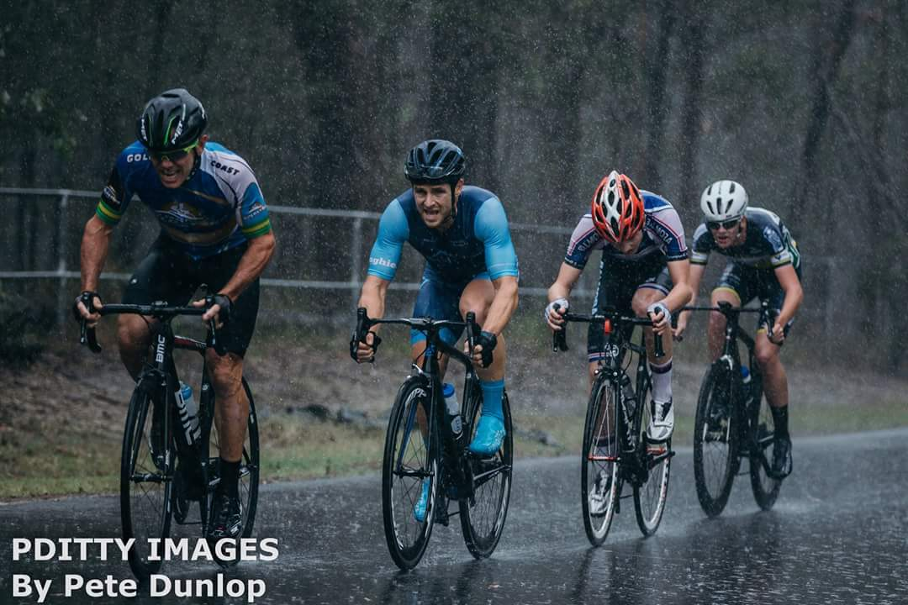

Liam Walsh.
Cyclist and Student.
My Story
I started racing in 2011 and started very slow. For 5 years a was normally the first rider dropped and often the last person to finish. But I always crossed the line. I pride myself on my determination and tenacity when racing. Yet everthing changed in 2016 when I was picked up by Cycling Queensland to ride in their track program. In early 2017 I picked a silver medal with the Queensland teams Pursuit team and secured a fourth place in the Points Race. I continued my run of form through State Titles, picking up two silvers and being recognised as the standout rider of the weekend. After States in 2017, I went to Road Natinals and again pciekd up a fourth place, this time in the Road Race. Currently I ride for the O'Donnell Legal Balmoral Elite Team.
My Skills
Sprint
Time Trial
Climb
Endurance
Technical Ability
National Top Tens
Race Wins
Podiums
Races Completed
My Photos
Contact Me
Brisbane, QLD, AUS
Phone: 0481 323 654
Email: liam29walsh@gmail.com
Lets get in touch. Send me a message:
Powered by Liam Walsh